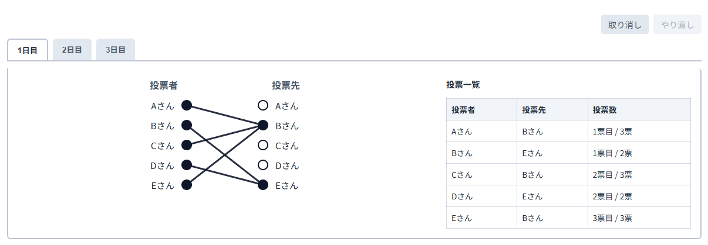

「人狼パワーツール」は人狼ゲームの推理を補助するためのツールです。以下の手順でご利用ください。
左カラムのフォームで参加者の名前を登録します。複数人追加したいときは「テキストから登録」をご活用ください。
n日目の列は自動で追加されます。CO者が複数の場合は役職名の隣にある+/-ボタン、デフォルト役職以外の追加は「役職の追加」ボタンから行えます。
投票者と投票先の丸をクリックして線で結び、投票履歴、投票順番を可視化します。取り消し/やり直しは右上のボタンから可能です。
思考の壁打ちにご活用ください。
右上のダウンロードボタンから、CO、投票、試合結果をまとめたPDFをダウンロードすることが可能です。
画面右上のスイッチからライト/ダークモードの切り替えが可能です。